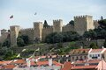

Multimédia
Fotografias
Video
Poema
Amadora, cidade de luz e caminho, Entre colinas, o teu traço é carinho. No compasso das ruas, há histórias a contar, E no teu peito, tantos sonhos a morar. És um mosaico de gentes e cor, Com bairros que vibram em vida e calor. Tens o abraço do rio e do céu, E em cada esquina, um pedaço do teu véu. No silêncio da noite, ecoa o pulsar, De uma cidade que nunca deixa de sonhar. Amadora, és mais que chão e cimento, És coração que bate, és puro sentimento.